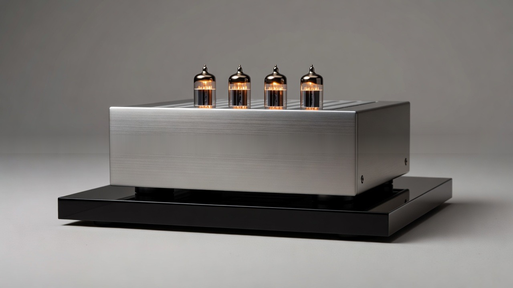
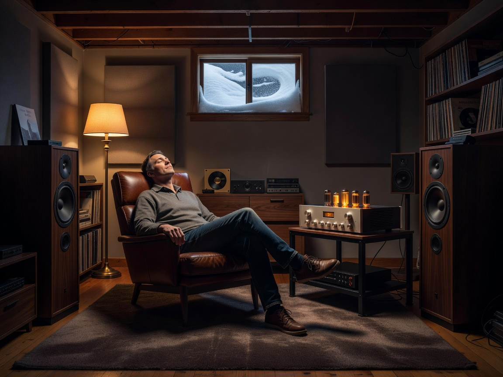
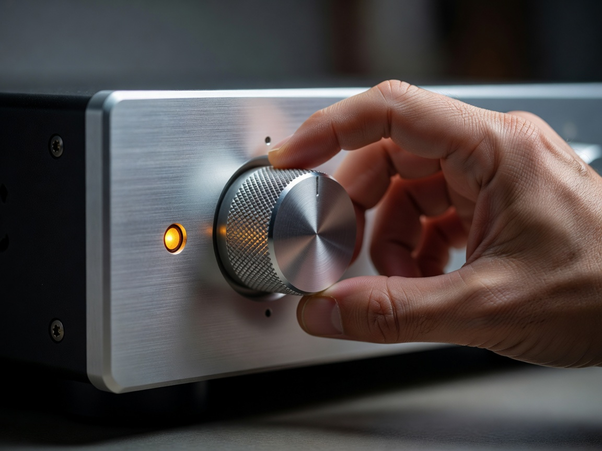
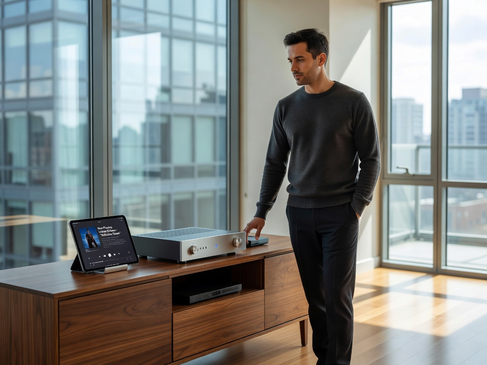
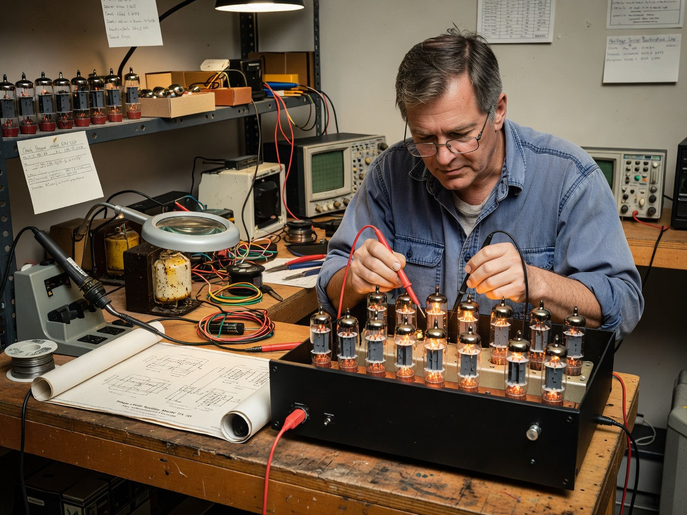
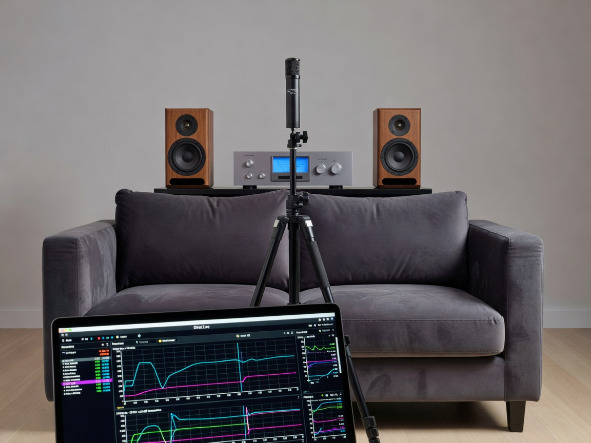

Home Audio Amplifiers in Ottawa: Brands and Buying Guide

Walk into a hi-fi showroom on Bank Street on a Saturday afternoon and you'll notice something strange: people just standing there, eyes half-closed, listening.
Not shopping. Listening.
That tells you something about how seriously Ottawa takes its home audio. We're a city of long winters, deep music libraries, and basements that quietly turn into reference listening rooms once the snow piles up. And at the center of every one of those setups sits an amplifier doing the real work.
If you're past the "what's a watt" stage and you're actually trying to figure out which amplifier belongs in your living room (or, frankly, your dedicated two-channel space upstairs), this guide is for you.
What Is Home Audio Amplification in Ottawa?

Amplification, in the home audio sense, is the act of taking a tiny line-level signal coming out of a streamer, turntable, or media server and turning it into something powerful enough to actually move a speaker cone. That's the short version.
The Ottawa version is a little more layered.
Core Function
An amplifier provides the voltage and current swing your speakers need to reproduce music or movie soundtracks with authority. Preamp stages handle source switching, gain, and sometimes tone. The power amplifier stage does the muscle work. Whether it's a 50-watt integrated or a 300-watt monoblock, the job is the same: clean, controlled power.
Local Demand Drivers
Capital-region buyers tend to skew toward serious gear. Diplomats, public servants, tech professionals out in Kanata, retirees in the Glebe rebuilding the systems they had in the '80s. The market here supports proper hi-fi because there's an actual audience for it. Cold weekends help, too. Nobody listens to a Mahler symphony in July.
Hi-Fi Versus Home Theater Use
A two-channel hi-fi amplifier and a multi-channel home theater amplifier solve very different problems. One chases tone, soundstage, and imaging. The other chases immersion, channel count, and room calibration. Mixing them up is the single most common mistake we see Ottawa buyers make.
Why Amplifier Quality Shapes Your Listening Experience

Speakers get the glory. Amplifiers do the heavy lifting.
Power Delivery and Headroom
Continuous power ratings on a spec sheet tell you maybe half the story. What you really want is headroom, the reserve power available for sudden dynamic peaks. A snare hit, a kick drum, a film explosion. An amplifier with stiff power supply rails and generous current delivery sounds effortless. One running near its ceiling sounds strained, even at modest volume.
Signal Purity and Tone
Low distortion figures matter, but so does what kind of distortion. Tube amplifiers tend toward even-order harmonics that flatter vocals. Class AB solid-state pushes neutrality and grip. Class D, which used to sound brittle, has matured into something genuinely competitive thanks to modern modules.
Speaker Pairing Compatibility
Amplifier and speaker need to get along electrically. A 4-ohm load with dipping impedance demands an amplifier that can double its power into lower impedance. Skip that check and you'll get clipping, compressed dynamics, and in bad cases, blown tweeters.
Amplifier Categories Available Across Ottawa Showrooms
Before getting into specific brands, it helps to know the categories most local dealers actually stock and demo.
- Integrated amplifiers combine preamp and power amp in one chassis, often with built-in phono stages, DACs, and streaming. Best for tidy two-channel setups.
- Stereo power amplifiers handle only amplification, paired with a separate preamp or DAC. Preferred when you want to upgrade one piece at a time.
- Multi-channel and home theater receivers drive 5, 7, 9, or 11 channels with onboard processing for Dolby Atmos and DTS:X. The workhorse of any serious home theater amplifier setup.
- Monoblock amplifiers dedicate one chassis per channel. Overkill for most. Glorious for the right speakers.
Integrated Amplifiers
The integrated has quietly become the default choice for Ottawa buyers downsizing from racks of separates. Less heat. Less cabling. Often, surprisingly little compromise.
Stereo Power Amplifiers
If you already own a high-end preamp or streamer with volume control, a dedicated stereo power amplifier lets you scale up without rebuilding the system. Useful for upgrade paths.
Multi-Channel and Home Theater Receivers
For home theater amplifiers, channel count and processing matter more than raw watts. Look for current HDMI 2.1 support, room correction (Dirac Live, Audyssey, YPAO), and clean amplification under simultaneous load across all channels.
Trusted Amplifier Brands Stocked by Ottawa Retailers
Brand reputation in this hobby is hard-earned. A few names show up again and again in capital-region showrooms for good reason.
| Brand | Strength | Typical Use |
|---|---|---|
| McIntosh | Tube and solid-state heritage, autoformer output | High-end two-channel |
| Rotel | Honest power, value engineering | Mid-fi integrated and power amps |
| NAD | Hybrid Digital, Master Series | Versatile, streaming-ready |
| Marantz | Warm signature, HEOS streaming | Two-channel and AVR |
| Yamaha | Aventage AVRs, refined integrated | Home theater amplifier setups |
| Denon | Feature-dense receivers | Multi-channel home theater |
McIntosh, Rotel, and NAD
McIntosh remains the aspirational pick, particularly the tube hybrids with those glowing blue meters. Rotel offers genuine high-current performance for the money. NAD's Master Series, with its Hybrid Digital topology, punches well above its weight class on the bench and in the room.
Marantz, Yamaha, and Denon
For mixed-use rooms doing both movies and music, Marantz and Yamaha tend to win listening tests on dialog clarity and musical presentation. Denon dominates on feature count, especially for buyers wiring up Atmos ceiling channels.
Boutique Tube Brands
PrimaLuna, Cary Audio, Line Magnetic, and a handful of others appear in specialty showrooms. These are the amplifiers people buy once and keep for twenty years.
How Do You Choose the Right Amplifier for Your Ottawa Home?

The right amplifier is the one matched to your room, your speakers, and how you actually listen.
Room Size and Acoustics
A small condo in Centretown with hardwood and glass behaves nothing like a finished basement in Barrhaven with carpet and drywall. Reflective rooms reward amplifiers with a slightly softer presentation. Damped rooms can handle more analytical gear without fatigue.
Speaker Sensitivity Match
A 96 dB sensitivity speaker barely needs 20 watts to fill a room. An 84 dB sealed bookshelf might want 150. Check the spec before buying anything.
Source and Streaming Needs
If most of your listening is Tidal, Qobuz, or Apple Music lossless, an integrated with a built-in streamer and DAC saves a box. If vinyl is the priority, prioritize a proper phono stage with adjustable loading.
Tube Amplifier Repair and Restoration in the Capital

Here's where I'll get opinionated.
Tube amplifier work in Ottawa is uneven. There are excellent specialists, and there are generic electronics shops that will replace a fuse, call it fixed, and hand it back to you. Knowing the difference matters.
Bias Adjustment Expertise
A proper tube tech checks plate dissipation, sets bias for the specific tube type installed, and verifies stability under signal, not just at idle. If the shop doesn't mention bias by name, keep looking.
Listening-Test Verification
The shops worth your money test under actual music signal across the audio band. They listen for transformer hum versus residual electrical noise. They confirm output stage behavior at realistic listening levels.
Vintage Transformer Care
Old output transformers are irreplaceable on many vintage units. A careful tech respects that. They check resonance, insulation, and DC resistance before powering up anything that's been sitting in a basement for fifteen years.
A few habits that separate the specialists from the generalists:
- They ask about the model, year, and intended use before quoting.
- They offer bias service with a listening check, not just a multimeter reading.
- They have a track record with the specific brand on your bench.
Professional Installation and Calibration Services

Buying the amplifier is step one. Installing it correctly is what makes the system actually sing. Proper installation in Ottawa homes typically includes load testing on your speaker wire runs, dedicated AC circuit recommendations for high-current amplifiers, and full room correction calibration using measurement microphones. For home theater amplifier setups, channel-level matching and subwoofer integration via Dirac Live or Audyssey MultEQ XT32 make a bigger difference than most owners expect. A calibrated mid-tier system will out-perform an uncalibrated flagship every time.
Questions Ottawa Buyers Ask Before Upgrading
The questions we hear most often, roughly in order:
- How many watts do I actually need for my room?
- Tube or solid-state for jazz and classical?
- Can I run a two-channel amplifier alongside my home theater receiver?
- Is Class D good enough for high-end listening now?
- Should I bi-amp my speakers?
Short answers: fewer than you think, either if matched well, yes via pass-through, increasingly yes, only if the speakers are designed for it.
FAQ
What's the difference between an integrated amplifier and a receiver? expand_more
A receiver adds a radio tuner and usually surround processing. An integrated focuses on two-channel performance.
Do I need a separate DAC? expand_more
Not if your integrated has a competent one built in. Most modern units do.
How long should a quality amplifier last? expand_more
Solid-state units routinely run 20 to 30 years with light service. Tube amplifiers last indefinitely with periodic tube replacement and capacitor refresh.
Is it worth repairing a vintage amplifier? expand_more
Almost always, if the transformers are healthy. Cosmetics and capacitors are easier to replace than iron.
Conclusion
Amplification is the spine of any serious home audio system, and Ottawa happens to be a surprisingly good city to shop for one. Specialty dealers, knowledgeable techs, and a community of listeners who actually care about the difference between a watt and a well-delivered watt.
Pick the amplifier matched to your speakers, your room, and your music. Get it installed properly. Have it serviced by someone who treats it like the instrument it is.
The rest, frankly, is just listening.